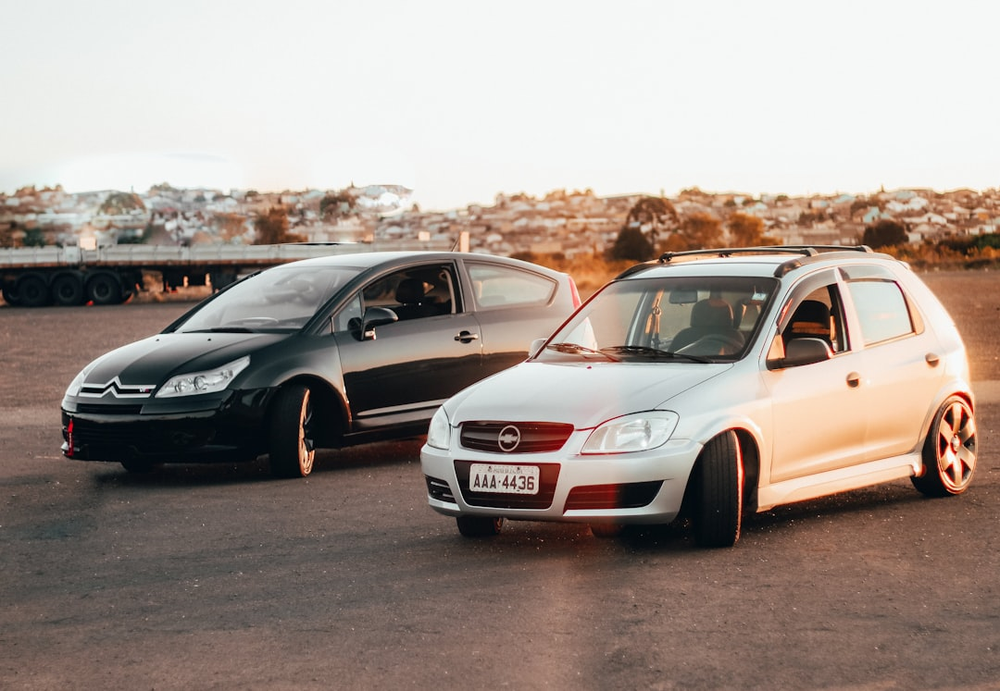
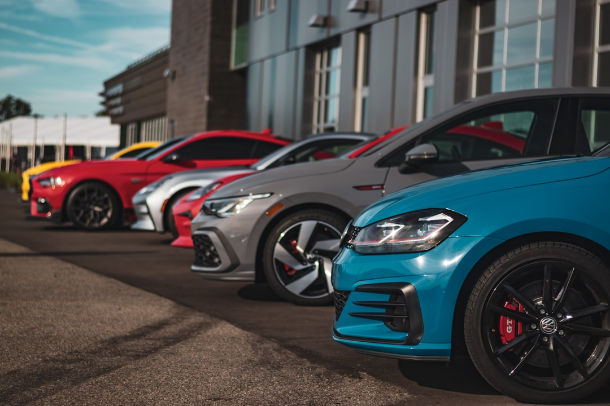
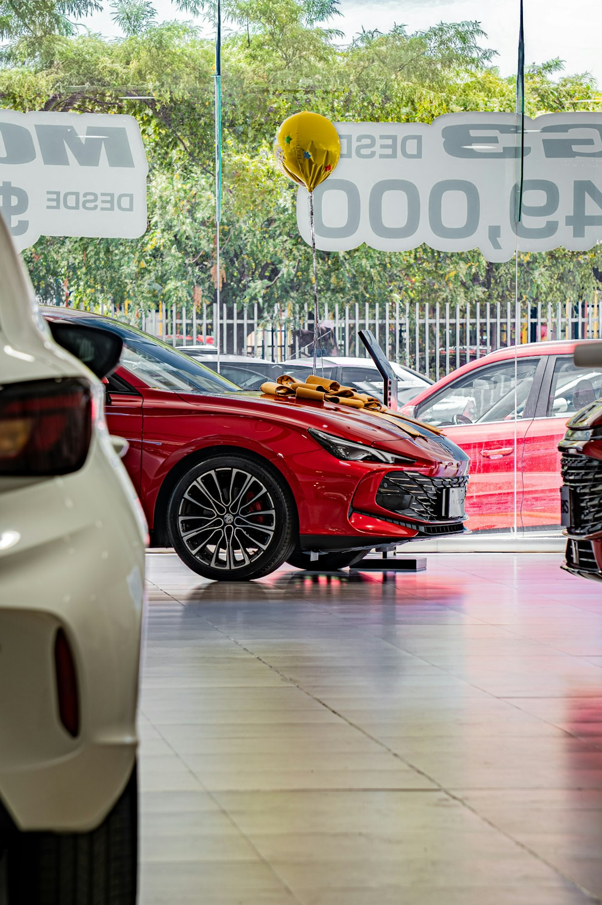
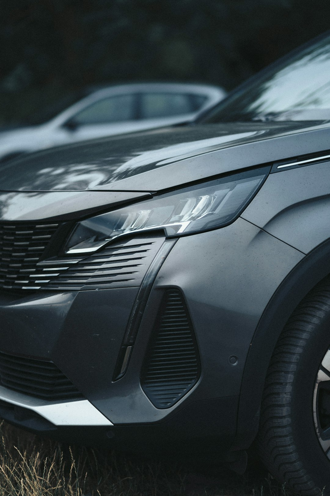

AutosNuevos.mx ayuda a organizar esa investigación ofreciendo información relacionada con autos nuevos, precios, marcas, modelos, versiones y agencias. El usuario puede explorar diferentes posibilidades y conocer las características que distinguen a cada vehículo.
El precio final también debe confirmarse con el distribuidor correspondiente. Los precios de autos nuevos pueden cambiar y determinadas promociones dependen de la fecha, ubicación, versión y disponibilidad. El financiamiento también puede presentar diferentes condiciones.
Comparar SUVs nuevas requiere considerar dimensiones, número de plazas, espacio de carga, motorización, transmisión, tracción, rendimiento y seguridad. No todas las SUVs ofrecen las mismas características, incluso cuando pertenecen a un segmento similar. La información técnica permite identificar las diferencias entre modelos.
El crecimiento de fabricantes especializados en movilidad eléctrica ha ampliado el mercado. BYD y otras marcas compiten junto con fabricantes establecidos que también ofrecen autos eléctricos e híbridos. Esto proporciona más alternativas a quienes desean comparar vehículos electrificados.
Los sedanes nuevos representan una categoría tradicional del mercado automotriz mexicano. Existen sedanes subcompactos, compactos, medianos y premium. Los compradores pueden comparar capacidad para pasajeros, espacio de cajuela, rendimiento, potencia, seguridad y tecnología. Para muchos conductores, un sedán continúa siendo una opción adecuada para desplazamientos urbanos y recorridos por carretera.
También pueden existir diferencias considerables entre versiones de un mismo automóvil. Una versión de entrada puede incluir el equipamiento necesario para el uso cotidiano, mientras que una configuración superior puede incorporar más sistemas de asistencia, elementos de comodidad, acabados diferentes o una motorización distinta. Comparar las versiones de autos nuevos permite determinar qué características justifican la diferencia de precio para cada comprador.

El espacio de carga también debe considerarse. La capacidad necesaria depende del uso del automóvil. Una familia que realiza viajes frecuentes puede requerir una cajuela diferente a la de una persona que conduce principalmente sola en ciudad.
Cuando hablamos de autos nuevos, México cuenta con una oferta amplia que comprende sedanes, hatchbacks, SUVs, crossovers, pickups, autos deportivos, vehículos familiares, autos híbridos y autos eléctricos. Dentro de cada categoría existen diferentes rangos de precios y niveles de equipamiento. Un comprador puede buscar un vehículo compacto para ciudad, mientras que otro puede necesitar una SUV con espacio para pasajeros y equipaje. También existen usuarios interesados en pickups para actividades profesionales o autos eléctricos para incorporar una tecnología de propulsión diferente.
AutosNuevos.mx permite investigar autos nuevos de fabricantes presentes en el mercado mexicano. Nissan, Chevrolet, Toyota, Volkswagen, Kia, Mazda, Hyundai, Honda, Ford, Suzuki, Renault, MG, BYD, JAC, Mitsubishi, Chirey, SEAT, Peugeot, Subaru, Audi, BMW y Mercedes-Benz forman parte de la variedad de marcas que los consumidores pueden considerar. Comparar fabricantes ayuda a conocer diferentes propuestas dentro de un mismo segmento.
El mantenimiento constituye otro aspecto del costo de propiedad. Servicios programados, seguro, combustible o electricidad y otros gastos deben considerarse junto con el precio de adquisición.
Los hatchbacks nuevos ofrecen una configuración práctica para quienes buscan dimensiones exteriores compactas. La integración del área de carga con el habitáculo puede proporcionar flexibilidad adicional, especialmente cuando los asientos traseros son abatibles. Esta configuración puede resultar adecuada para usuarios que conducen principalmente en zonas urbanas.
Los autos eléctricos nuevos funcionan mediante energía almacenada en baterías. Para comparar vehículos eléctricos resulta conveniente analizar capacidad de batería, autonomía, potencia y opciones de carga. Estos datos ayudan a determinar si un modelo corresponde con los recorridos habituales del usuario.


El mercado de autos nuevos en México continúa cambiando con la llegada de nuevos fabricantes, modelos y tecnologías. Los consumidores pueden encontrar más opciones de motorización y categorías, haciendo que la investigación previa sea especialmente útil.
AutosNuevos.mx proporciona un punto de partida para quienes desean conocer el mercado mexicano de autos nuevos. Desde autos económicos y sedanes hasta SUVs, pickups, híbridos y autos eléctricos, la información permite explorar diferentes opciones y avanzar hacia una decisión basada en las características que realmente necesita cada comprador.
La tecnología de los autos nuevos también ha evolucionado. Pantallas táctiles, Apple CarPlay, Android Auto, Bluetooth, cuadros digitales, cargadores inalámbricos, cámaras y diferentes sistemas de infoentretenimiento se encuentran disponibles en numerosos modelos. Para realizar una comparación correcta, es conveniente revisar exactamente qué tecnología incluye la versión seleccionada.
Cuando hablamos de mejores autos nuevos, no existe una única respuesta aplicable a todos los compradores. Un vehículo económico puede ser la opción adecuada para un usuario, mientras que una SUV de mayor tamaño puede ser más apropiada para una familia.
AutosNuevos.mx permite comparar estos elementos antes de acudir a una agencia. La investigación inicial puede comenzar con una categoría de vehículo y continuar con una selección de marcas y modelos.
Cuando se analiza un financiamiento de autos nuevos, conviene considerar enganche, plazo, tasa, mensualidades y costo total. Una mensualidad más baja no necesariamente representa el menor costo total.
El rendimiento de combustible continúa siendo relevante en los autos nuevos con motor de combustión. Un conductor que recorre muchos kilómetros puede valorar especialmente el consumo. Sin embargo, el rendimiento debe analizarse junto con otras características como tamaño, potencia y tipo de vehículo.
Las transmisiones también presentan diferencias. En el mercado existen autos nuevos con transmisión manual, automática, CVT y diferentes sistemas automatizados. El tipo de transmisión puede cambiar incluso entre versiones del mismo vehículo.
La motorización es otro aspecto central del mercado de autos nuevos. Los motores de gasolina continúan siendo comunes, pero los autos híbridos y autos eléctricos ofrecen más posibilidades que en años anteriores. Cada tecnología presenta características diferentes relacionadas con consumo, autonomía y funcionamiento.
